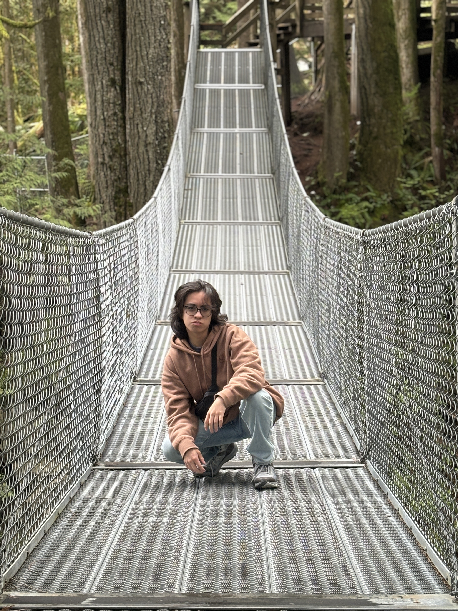
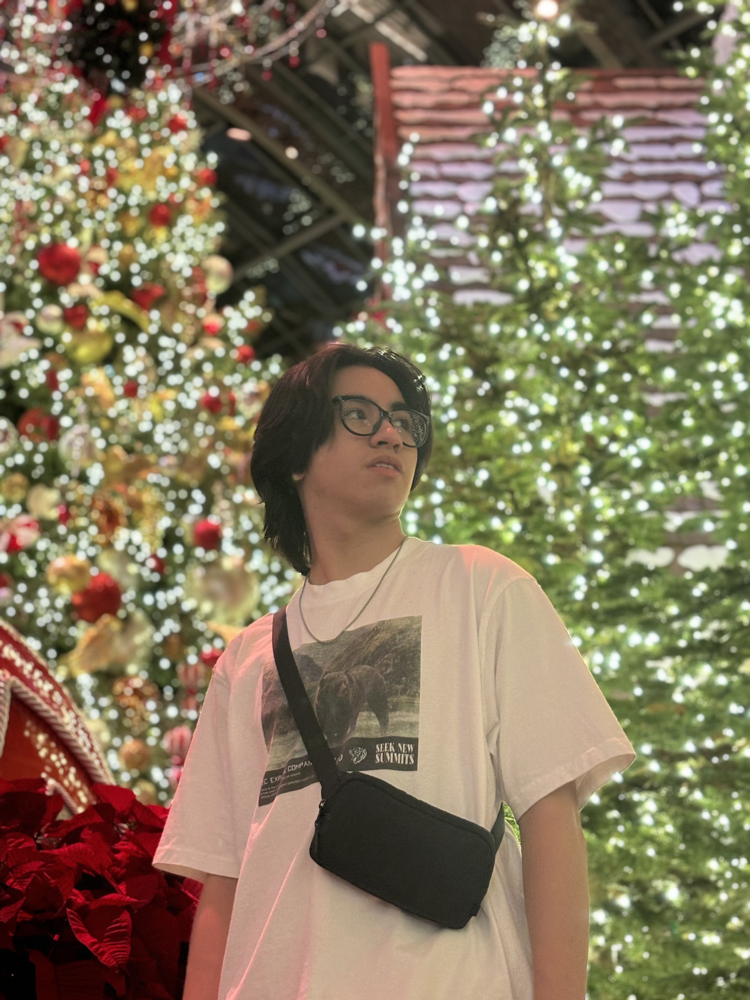

Meet the Artist
|  |  |
Kristian Martinez
My Name is Kristian Martinez, and I am an 21 year old Filipino artist studying graphic design and film at the University of Nevada, Las Vegas. I specialize in logo design, poster design, motion graphics, and animation. Born and raised in Las Vegas, my history with art has gone back to the earliest days of my childhood. Whether it was the countless movies I watched as a kid or the stacks of papers filled with drawings, I knew the art of storytelling was for me.
With countless of elementary, middle school, and high school art awards I've received, I was always dubbed as "the art kid" in his class. As I grew up my skills in the art not only grew with me but expanded as well. I have gotten more and more proficient in tools such as Illustrator, Photoshop, After Effects, Davinci Resolve, and Blender, but even with three years of various technical experiences under my belt, I am always striving to learn new skills and softwares.
For the past three years I have been a freelance graphic designer, animator, and motion graphics artist. As a graphic designer, I have designed short-film posters, album covers, and logos in the Las Vegas and Phoenix film communities. As an filmmaker and storyteller, I strive to push the boundaries of film and animated storytelling through the lense my experiences on life. Currently, I am an award winning director and animator with my animated short film Homing Pigeon.
Education
University of Nevada, Las Vegas
Candidate for B.A. degree in Graphic Design with a minor in Film, expected graduation Spring 2027
Professional Experience
- Spring 2025 - Freelance Production Logo Animator for 643 Productions
- Spring 2024 - Freelance Logo Designer for Sunset Barbershop
- Fall 2023-Present - Freelance Short Film Poster Designer for various student short films
Recent Accomplishments
- Fall 2023 - Best Alumni Film at the Grand Canyon University Film Festival
- Spring 2025 - Audience Vote 3rd Place at the University of Nevada, Las Vegas's Spring Flicks Film Festival
- Spring 2025 - The Clark Bar Award (The Best Short Short) at the University of Nevada, Las Vegas's Spring Flicks Film Festival